Adherent Raindrop Detection and Removal in Video
Shaodi You, Robby T. Tan, Rei Kawakami and Katsushi Ikeuchi
Video results on Real Raindrops
Hand held camera, night scene
| Intensity Change (IC) | Optical Flow (OF) | IC + OF |
| 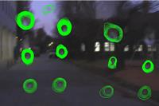 | 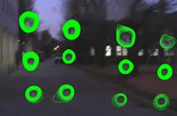 | 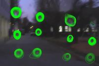 |
Click to download the video
Hand held camera, raindrops with various shape and size
| Intensity Change (IC) | Optical Flow (OF) | IC + OF |
| 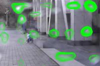 | 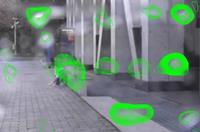 |
Hand held camera, raindrops with significant blurring
| Intensity Change (IC) | Optical Flow (OF) | IC + OF |
| 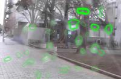 | 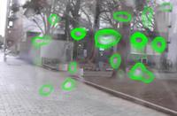 | 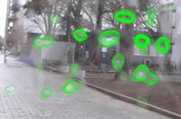 |
Hand held camera, shaking raindrops with highlights
| Intensity Change (IC) | Optical Flow (OF) | IC + OF |
| 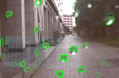 | 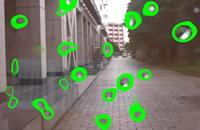 | 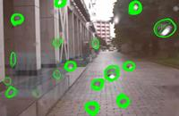 |
Surveillance camera
| Intensity Change (IC) | Optical Flow (OF) | IC + OF |
| 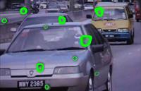 | 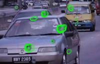 |
Car-mounted camera
| Input | Detection | Removal |
| 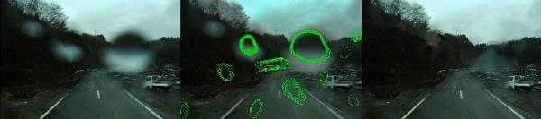 | ||